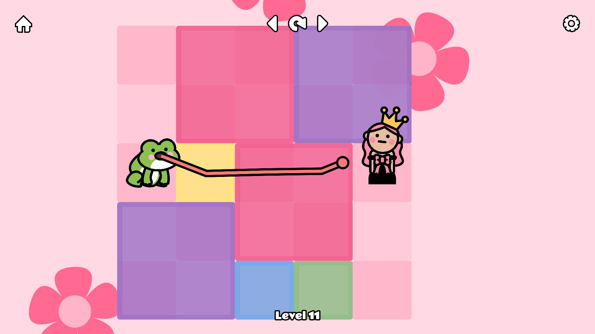
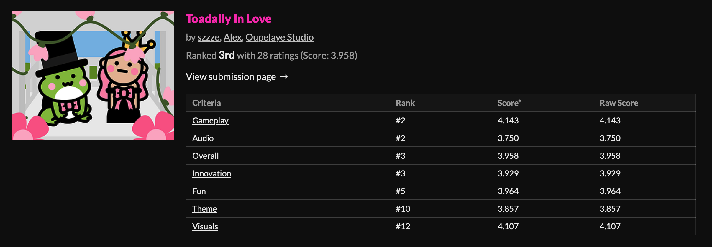

Make the grid readable
Color, tile states, and simple character silhouettes show where players can move and what might block a path.
A playful puzzle game about clearing a path, pulling objects, and bringing two unlikely characters together.
A grid-based puzzle game built with a programmer during the Girly Game Jam.

Players click or drag across a grid to extend the toad’s tongue, clear a route, and pull objects toward the goal. I shaped the visual direction, information hierarchy, interaction cues, and game feel around that core mechanic.
Color, tile states, and simple character silhouettes show where players can move and what might block a path.
The tongue path gives direct feedback, connecting the player’s drag gesture to the puzzle outcome.
A floral visual world supports the romantic, humorous premise without getting in the way of the puzzle.
Simple tiles, character placement, and the tongue path make each move understandable as the puzzle changes.


The game ranked third overall among 73 entries, including second place for gameplay and audio. Its itch.io analytics recorded 980 views and 436 browser plays.


A complete public HTML5 game with clear interactions and a memorable visual world.